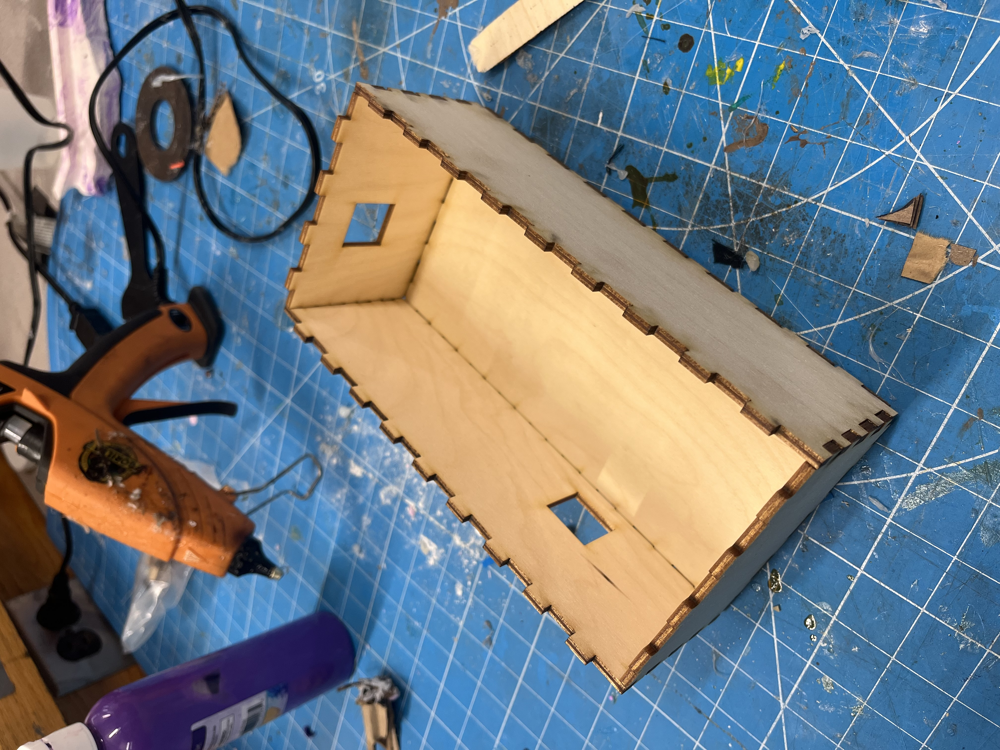
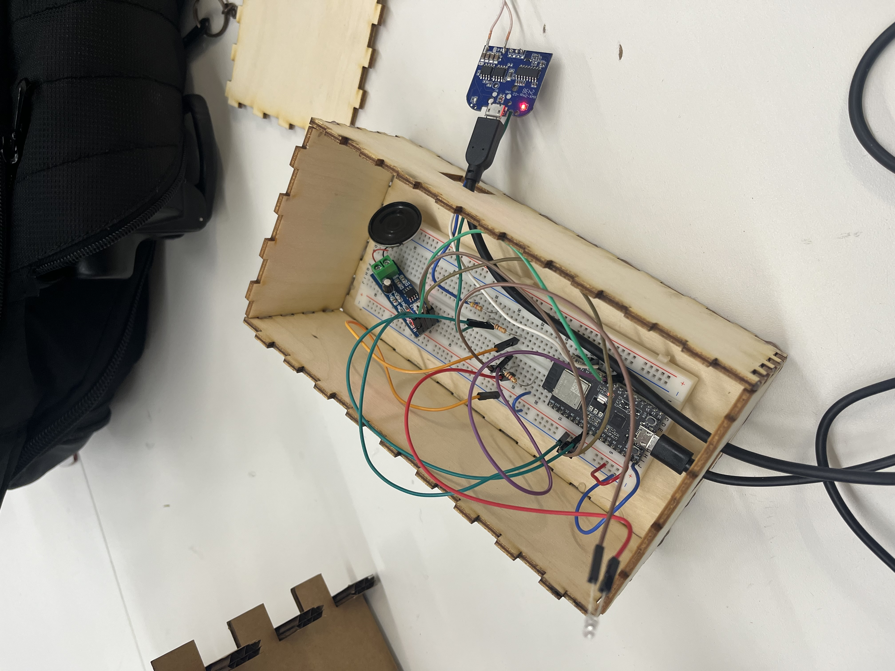
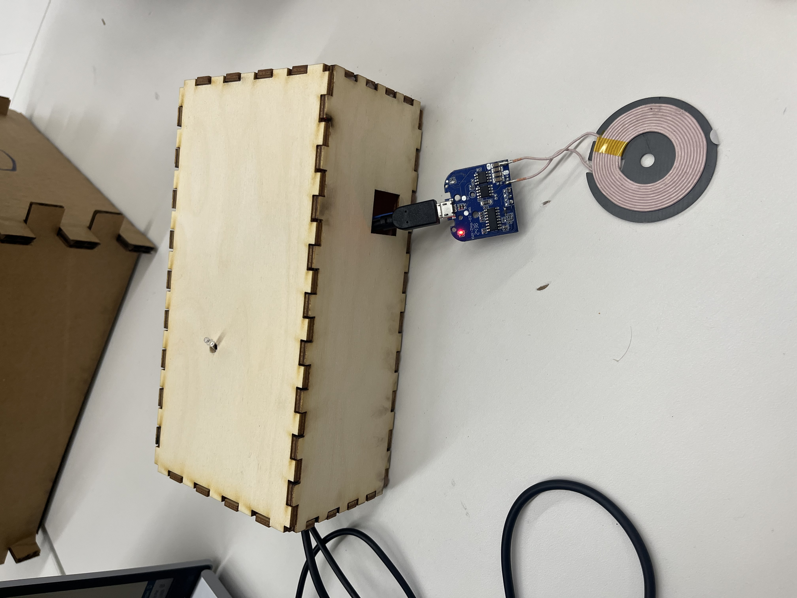

<div class="textcontainer">
<p class="margin"> </p>
<h3>Week 7: Electronic Outputs</h3>
<p class="margin"> </p>
<h4>Assignment: Minimum Viable Product for Final Project</h4>
<p class="margin"> </p>
For my minimum viable product, I wanted to finish a majority of the circuitry and create a basic phone procrastination timer. The idea is that when a phone is placed on the Qi wireless charger, the timer begins. If the phone is removed before the focus session is complete, the device triggers an alarm sound using a speaker. If the phone stays on the charger for the full timer duration, the device plays a short success jingle and lights up the LED.
<p class="margin"> </p>
<h4>Prototype Enclosure</h4>
<p class="margin"> </p>
I built a laser-cut wooden box to hold the circuit, breadboard, ESP32, speaker, LED, and Qi charging module. I added openings in the side of the box so that wires and the Qi charger connection could pass through cleanly.
<p class="margin"> </p>
<p></p>
<p></p>
<p class="margin"> </p>
<p></p>
<p class="margin"> </p>
<h4>Electronic Output System</h4>
<p class="margin"> </p>
The main output for this prototype is sound. I used a speaker module with an LM386 amplifier so that the device could make an alarm sound when the phone is removed. I also added an LED output so the device can visually communicate the timer state. During the timing state, the LED blinks. When the phone is removed, the LED flashes with the alarm. When the session is completed, the LED turns on and the device plays a short success sound.
<p class="margin"> </p>
<h4>Demo Videos</h4>
<p class="margin"> </p>
<video width="400" height="300" controls>
<source src="mvp_final.mov" type="video/mp4">
Your browser does not support the video tag.
</video>
<p class="margin"> </p>
Here is the code:
<h4>Code</h4>
<pre class="codebox"><code>
// Phone Procrastination Timer
// ESP32 + Qi Charger + LM386 + LED
// ── Pin config ────────────────────────────────
#define SENSOR_PIN 34
#define SPEAKER_PIN 25
#define LED_PIN 2
// ── Tuning ────────────────────────────────────
// With a 10kΩ / 6.8kΩ voltage divider:
// 5.0V idle (no phone) → ~3.1V → ADC ~3855
// 2.2V with phone → ~1.4V → ADC ~1740
// Threshold sits between the two:
#define PHONE_THRESHOLD 2700
// ── Timer ─────────────────────────────────────
#define FOCUS_SECONDS 15
// ── Tone frequencies ──────────────────────────
#define ALARM_FREQ 880
#define SUCCESS_FREQ_LO 523
#define SUCCESS_FREQ_HI 784
// ── PWM (ESP32 core 3.x API) ──────────────────
#define PWM_RESOLUTION 8
enum State { IDLE, TIMING, ALARM, DONE };
State state = IDLE;
unsigned long sessionStart = 0;
unsigned long focusDuration = (unsigned long)FOCUS_SECONDS * 1000UL;
unsigned long lastBeepToggle = 0;
bool beepOn = false;
#define BEEP_ON_MS 150
#define BEEP_OFF_MS 100
bool phonePresent() {
long sum = 0;
for (int i = 0; i < 8; i++) {
sum += analogRead(SENSOR_PIN);
delayMicroseconds(200);
}
return (sum / 8) < PHONE_THRESHOLD;
}
void toneOn(int freq) {
ledcAttach(SPEAKER_PIN, freq, PWM_RESOLUTION);
ledcWrite(SPEAKER_PIN, 128);
}
void toneOff() {
ledcWrite(SPEAKER_PIN, 0);
}
void playSuccessJingle() {
toneOn(SUCCESS_FREQ_LO);
delay(120);
toneOff();
delay(60);
toneOn(SUCCESS_FREQ_HI);
delay(220);
toneOff();
}
void setLED(bool on) {
digitalWrite(LED_PIN, on ? HIGH : LOW);
}
void setup() {
Serial.begin(115200);
Serial.println("Phone Procrastination Timer — boot");
Serial.print("Focus duration: ");
Serial.print(FOCUS_SECONDS);
Serial.println("s");
pinMode(SENSOR_PIN, INPUT);
pinMode(LED_PIN, OUTPUT);
analogSetAttenuation(ADC_11db);
toneOff();
setLED(false);
Serial.println("[STATE] IDLE");
}
void loop() {
bool present = phonePresent();
unsigned long now = millis();
switch (state) {
case IDLE:
setLED(false);
if (present) {
state = TIMING;
sessionStart = now;
Serial.println("[STATE] TIMING");
Serial.print("Timer started: ");
Serial.print(FOCUS_SECONDS);
Serial.println("s");
}
break;
case TIMING: {
unsigned long elapsed = now - sessionStart;
unsigned long remaining = focusDuration - min(elapsed, focusDuration);
setLED((now / 800) % 2 == 0);
static unsigned long lastPrint = 0;
if (now - lastPrint >= 1000) {
lastPrint = now;
Serial.print("Remaining: ");
Serial.print(remaining / 1000);
Serial.println("s");
}
if (!present) {
toneOff();
state = ALARM;
beepOn = false;
lastBeepToggle = now;
Serial.println("[STATE] ALARM");
} else if (elapsed >= focusDuration) {
state = DONE;
Serial.println("[STATE] DONE");
}
break;
}
case ALARM:
if (now - lastBeepToggle >= (unsigned long)(beepOn ? BEEP_ON_MS : BEEP_OFF_MS)) {
beepOn = !beepOn;
lastBeepToggle = now;
if (beepOn) {
toneOn(ALARM_FREQ);
setLED(true);
} else {
toneOff();
setLED(false);
}
}
if (present) {
toneOff();
setLED(false);
state = TIMING;
Serial.println("[STATE] TIMING (resumed)");
}
break;
case DONE:
toneOff();
playSuccessJingle();
setLED(true);
Serial.println("Session complete!");
delay(3000);
setLED(false);
state = IDLE;
Serial.println("[STATE] IDLE");
break;
}
delay(20);
}
</code></pre>
<p class="margin"> </p>
This prototype successfully demonstrates the core behavior of my final project: detecting whether the phone is present, responding with an alarm when the phone is removed, and giving positive feedback when the focus session is completed.
<p class="margin"> </p>
</div>